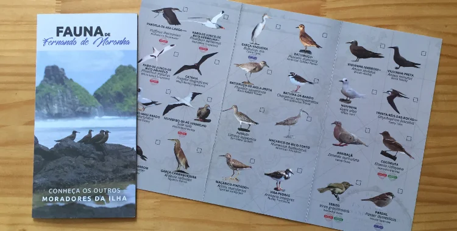

Fauna

Aves: Existem duas aves endêmicas: a cocoruta (Elaenia ridleyana) e o Noronha Vireo (Vireo gracilirostris), este último também encontrado na Ilha Rata. Há também uma corrida endêmica do avoante (Zenaida auriculata noronha).
Mamíferos: O roedor sigmodontine endêmico Noronhomys vespuccii está extinto.
Répteis: Espécies endêmicas incluem a Amphisbaena ridleyi e a Trachylepis atlantica.
Flora
Plantas Endêmicas: O arquipélago de Fernando de Noronha possui 15 espécies de plantas endêmicas listadas pelo PNUMA. Incluem gêneros como Capparis, Ceratosanthes, Cayaponia, Moriordica, Cereus, Palicourea, Guettarda, Bumelia, Physalis e Ficus.